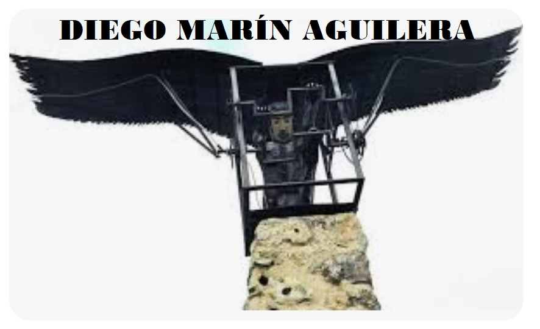
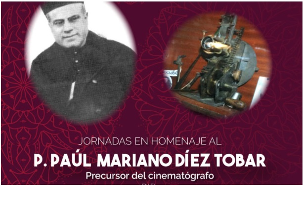

Jornadas Culturales "Diego Marín Aguilera"


Una exposición sobre el valor del esfuerzo, el trabajo y el respeto a nuestro entorno a través de dos genios burgaleses.
Utilizando a estos dos grandes inventores, queremos dejar claro a los alumnos de 1º de ESO que el objetivo es motivarles para que aprovechen el tiempo. Es hora de bajar los ratios de incidencias y subir vuestra ambición académica.
| Categoría | Centro | Vuestro Grupo |
|---|---|---|
| Alumnos | ||
| Incidencias | ⚠️ | |
| Rendimiento Académico | ||
| Todo Aprobado | ||
| 1 o 2 Suspensas | ||
| +3 Suspensas | (¡La mayoría!) | |
¿Por qué en una sala de cine nadie grita? Porque todos han pagado por un tiempo que consideran valioso. Tu educación en el instituto cuesta mucho dinero y esfuerzo; es tu película, no dejes que nadie la arruine.
Mándale callar con la mirada: Si alguien interrumpe, mírale con firmeza. Hazle saber que te está robando tu tiempo.
No te sumes al caos: Reírse de la gracia del que molesta es darle permiso para seguir. Sé tú el protagonista, no el público del payaso.
Valora tu futuro: Cada minuto de ruido es un minuto menos que tienes para aprender el "secreto" que te hará libre.
Disfrutas un concierto porque te sabes la canción. Si vienes a clase con la lección leída, no te aburrirás porque sabrás de qué trata el tema.
Localidad: Coruña del Conde (Burgos)
No fue casualidad. Dedicó 6 años de observación a las aves rapaces. Analizó cómo movían sus alas para planear. Este pastor burgalés, con una mente científica adelantada a su tiempo, recolectó plumas de águilas y buitres para recubrir su estructura de madera de sauce y hierro forjado.
El triste final: El 15 de mayo de 1793 realizó su proeza, pero tras aterrizar por la rotura de un perno, la ignorancia y el miedo de sus vecinos, alentados por la superstición, hicieron que quemaran su invento. Diego, destrozado por ver su obra en cenizas, murió de pena en 1799.
"El genio es 1% inspiración y 99% transpiración. Diego no se rindió ante las burlas; trabajó hasta que sus pies dejaron de tocar el suelo. Su legado es un valor que debemos proteger frente a la intolerancia."
Localidad: Tardajos (Burgos)
Sacerdote paúl y científico superdotado. En 1889, durante una conferencia en el colegio de Murguía, explicó técnicamente el secreto que permitiría el cine: la intermitencia. Este sistema hace que la película se detenga un instante frente a la luz para que el cerebro no vea imágenes borrosas.
Cedió sus apuntes a A. Flamereau, quien fue el nexo con los hermanos Lumière. Además, fue un inventor imparable: creó el Logautógrafo (voz a texto), el Iconoscopio (precursor del televisor) y el Icocinéfono para dar sonido a las imágenes.
| Año | Nombre | Hazaña |
|---|---|---|
| 1793 | Diego Marín Aguilera | Vuelo documentado de 360m en Burgos. 110 años antes que los Wright. |
| 1903 | Hermanos Wright | Primer vuelo motorizado (260m). |
| Año | Nombre | Hazaña |
|---|---|---|
| 1889 | Mariano Díez Tobar | Presentación del sistema de intermitencia y diseño del cinematógrafo. |
| 1895 | Hermanos Lumière | Primera proyección pública de pago. |
El rigor extremo que Diego aplicó durante 6 años de observación constante de las aves rapaces.
La capacidad de crear un avión con materiales sencillos como madera y plumas, adelantándose a la ingeniería moderna.
El trabajo incansable día tras día, a pesar de la falta de recursos y la incomprensión de los demás.
Saber reconocer a quienes le ayudaron, como el herrero del pueblo que forjó las piezas clave del aparato.
Seguir un método lógico de diseño y construcción, transformando la idea en una realidad tangible.
La llama interna que le llevó a investigar campos tan variados como el cine, la medicina y el lenguaje.
Su capacidad para aprender y resolver problemas complejos sin depender de grandes academias.
La consideración hacia la ciencia y la generosidad al compartir sus hallazgos con el mundo.
La resolución magistral de la intermitencia, el "corazón" técnico del cinematógrafo.
No conformarse con lo que existe, sino buscar siempre una mejora para la humanidad.
Su desinterés material al ceder sus planos más valiosos de forma gratuita.
Mirar el mundo con ojos curiosos para descubrir las leyes ocultas tras la luz y el movimiento.
El CIS 2016 analiza cómo encuentran empleo los ciudadanos y sí recoge que la vía más frecuente es “a través de familiares o amigos” según sus barómetros y estudios de opinión.
A partir de la historia de estos dos genios burgaleses, se nos plantean preguntas incómodas para el presente: